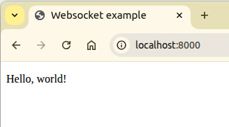

Steward
分享是一種喜悅、更是一種幸福
程式語言 - GNU - C/C++ - LWS_SEND_BUFFER_PRE_PADDING + EXAMPLE_TX_BUFFER_BYTES + LWS_SEND_BUFFER_POST_PADDING
參考資訊：
https://github.com/iamscottmoyers/simple-libwebsockets-example
server.c
#include <stdio.h>
#include <string.h>
#include <libwebsockets.h>
#define EXAMPLE_RX_BUFFER_BYTES 255
#define LEN (LWS_SEND_BUFFER_PRE_PADDING + EXAMPLE_RX_BUFFER_BYTES + LWS_SEND_BUFFER_POST_PADDING)
struct payload {
unsigned char data[LEN];
size_t len;
} received_payload;
enum protocols {
PROTOCOL_HTTP = 0,
PROTOCOL_EXAMPLE,
PROTOCOL_COUNT
};
static int callback_http(struct lws *wsi, enum lws_callback_reasons reason, void *user, void *in, size_t len)
{
switch (reason) {
case LWS_CALLBACK_HTTP:
lws_serve_http_file(wsi, "main.htm", "text/html", NULL, 0);
break;
}
return 0;
}
static int callback_example( struct lws *wsi, enum lws_callback_reasons reason, void *user, void *in, size_t len )
{
switch (reason) {
case LWS_CALLBACK_RECEIVE:
memcpy(&received_payload.data[LWS_SEND_BUFFER_PRE_PADDING], in, len);
received_payload.len = len;
lws_callback_on_writable_all_protocol(lws_get_context(wsi), lws_get_protocol(wsi));
break;
case LWS_CALLBACK_SERVER_WRITEABLE:
lws_write(wsi, &received_payload.data[LWS_SEND_BUFFER_PRE_PADDING], received_payload.len, LWS_WRITE_TEXT);
break;
}
return 0;
}
static struct lws_protocols protocols[] =
{
{
"http-only",
callback_http,
0,
0,
},
{
"example-protocol",
callback_example,
0,
EXAMPLE_RX_BUFFER_BYTES,
},
{
NULL,
NULL,
0,
0
}
};
int main(int argc, char *argv[])
{
struct lws_context_creation_info info = { 0 };
info.port = 8000;
info.protocols = protocols;
info.gid = -1;
info.uid = -1;
struct lws_context *context = lws_create_context(&info);
while (1) {
lws_service(context, 1000000);
}
lws_context_destroy(context);
return 0;
}
client.c
#include <stdio.h>
#include <stdlib.h>
#include <string.h>
#include <libwebsockets.h>
#define EXAMPLE_TX_BUFFER_BYTES 255
#define LEN (LWS_SEND_BUFFER_PRE_PADDING + EXAMPLE_TX_BUFFER_BYTES + LWS_SEND_BUFFER_POST_PADDING)
enum protocols {
PROTOCOL_EXAMPLE = 0,
PROTOCOL_COUNT
};
static struct lws *web_socket = NULL;
static int callback_example(struct lws *wsi, enum lws_callback_reasons reason, void *user, void *in, size_t len)
{
size_t n = 0;
unsigned char buf[LEN];
unsigned char *p = &buf[LWS_SEND_BUFFER_PRE_PADDING];
switch (reason) {
case LWS_CALLBACK_CLIENT_ESTABLISHED:
lws_callback_on_writable(wsi);
break;
case LWS_CALLBACK_CLIENT_WRITEABLE:
n = sprintf((char *)p, "%s", "Hello, world!");
lws_write(wsi, p, n, LWS_WRITE_TEXT);
break;
case LWS_CALLBACK_CLIENT_CLOSED:
case LWS_CALLBACK_CLIENT_CONNECTION_ERROR:
web_socket = NULL;
break;
}
return 0;
}
static struct lws_protocols protocols[] = {
{
.name = "example-protocol",
.callback = callback_example,
.per_session_data_size = 0,
.rx_buffer_size = 0,
.id = 0,
.user = NULL,
.tx_packet_size = 0
},
{
NULL,
NULL,
0,
0
}
};
int main(int argc, char *argv[])
{
struct lws_context_creation_info info = { 0 };
info.port = CONTEXT_PORT_NO_LISTEN;
info.protocols = protocols;
info.gid = -1;
info.uid = -1;
time_t old = 0;
struct timeval tv;
struct lws_context *context = lws_create_context(&info);
while( 1 ) {
gettimeofday(&tv, NULL);
if (!web_socket && tv.tv_sec != old) {
struct lws_client_connect_info ccinfo = { 0 };
ccinfo.context = context;
ccinfo.address = "localhost";
ccinfo.port = 8000;
ccinfo.path = "/";
ccinfo.host = lws_canonical_hostname(context);
ccinfo.origin = "origin";
ccinfo.protocol = protocols[PROTOCOL_EXAMPLE].name;
web_socket = lws_client_connect_via_info(&ccinfo);
}
if (tv.tv_sec != old) {
lws_callback_on_writable(web_socket);
old = tv.tv_sec;
}
lws_service(context, 250);
}
lws_context_destroy(context);
return 0;
}
main.htm
<!DOCTYPE html>
<html>
<title>Websocket example</title>
<script>
var socket = new WebSocket("ws://" + document.domain + ':' + location.port, "example-protocol");
function update(msg) { document.getElementById("num").innerHTML = msg; }
socket.onopen = function() { console.log("socket open"); update("open"); }
socket.onclose = function() { console.log("socket close"); update("closed"); }
socket.onmessage = function(msg) { console.log("socket message: " + msg.data); update(msg.data); }
</script>
<body>
<p id="num"></p>
</body>
</html>
編譯、執行
$ gcc client.c -o client -lwebsockets $ gcc client.c -o client -lwebsockets $ ./server & $ ./client &
開啟網頁即可
